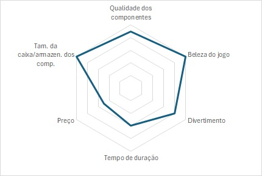
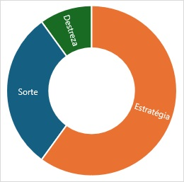
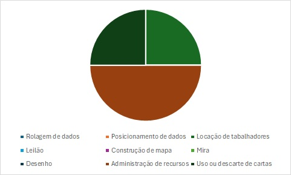

R$ 420,00 (3,36)
________________________________________
Idade: +13
Designer: James A. WilsonArtista: Andrew Bosley, Dann May
Editora: Galápagos (BR), CMON Global Limited (US)
Versão digital: Sim
________________________________________
Informações:
Nota geral: 80,8
Tempo médio das partidas: 87 min
Categoria: (competitivo, competitivo (grupo), cooperativo, semicooperativo, solo)
Avaliação: (nota com a médi do gráfico)
0

Estilo (sorte, azar ou destreza):
Jogabilidade (formas de evoluir, avançar e ganhar o jogo):
Componentes:meeples, cartas, tabuleiro, moedas
________________________________________
Descrição: Dentro do encantador vale de Everdell, sob os ramos das altas árvores, entre riachos calmos e poças musgosas, uma civilização de criaturas da floresta está prosperando e se expandindo. De Everfrost a Bellsong, muitos anos vieram e se foram, mas chegou a hora de estabelecer novos territórios e novas cidades. Você será o líder de um grupo de criaturas para realizar esta tarefa. Há edifícios para construir, personagens para encontrar, eventos para atender - você tem um ano ocupado à sua frente. Será que o sol brilhará mais na sua cidade antes que a lua do inverno se eleve?
Everdell é um jogo dinâmico de construção de tabuleiro e alocação de trabalhadores.
Everdell é um jogo dinâmico de construção de tabuleiro e alocação de trabalhadores.
________________________________________